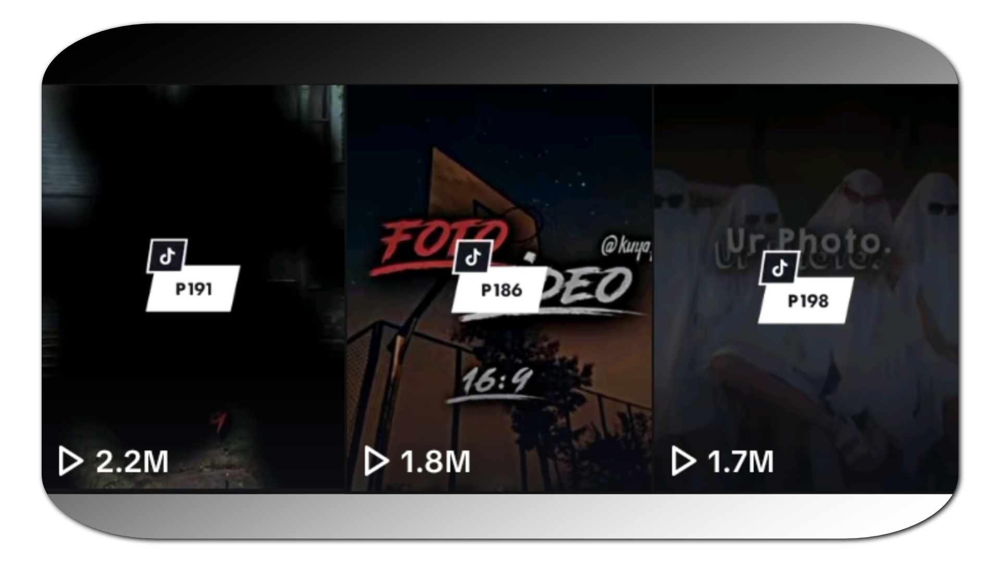

MY PORTFOLIO
Hello! I'm Roman B Maque, a 2nd-year college IT student with a passion for creativity and technology. On this portfolio, I'll be showcasing my TikTok account where I share my Mobile Legends: Bang Bang (MLBB) preset creations, complete with example videos and sample outputs. Additionally, I'll also be featuring some of my school projects that highlight my skills in graphic design using Canva and Figma. Let's take a look!

Today, we're showcasing my expertise as a Mobile Legends: Bang Bang (MLBB) preset creator on TikTok, where I craft visually stunning and game-changing presets that elevate gameplay and self-expression - check out my TikTok account and sample preset to see my work in action!
As you can see this is my TikTok Account
You can scroll down to explore some of my most viral MLBB presets that have taken the community by storm, racking up over a million views each! From game-changing aesthetics to show-stopping visuals, I'm excited to share some of my top creations with you, along with sample videos that showcase their impact.
This are the 3 videos of my work that got over a million views
No. 1 Got over 2.2 Million Views
No. 2 Got over 1.8 Million Views
No. 3 Got over 1.7 Million Views
Now that you've seen my MLBB edits, let's shift gears to my graphic design projects - scroll further to explore how I utilized Canva and Figma to bring creative school projects to life!